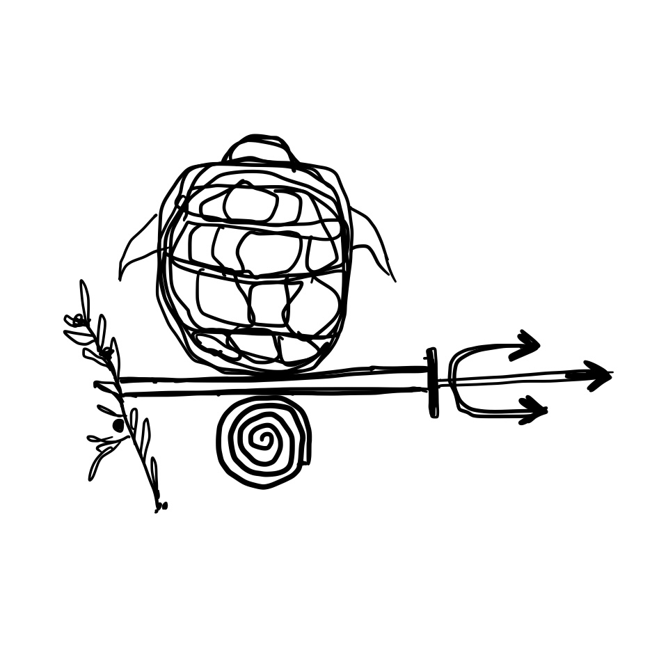
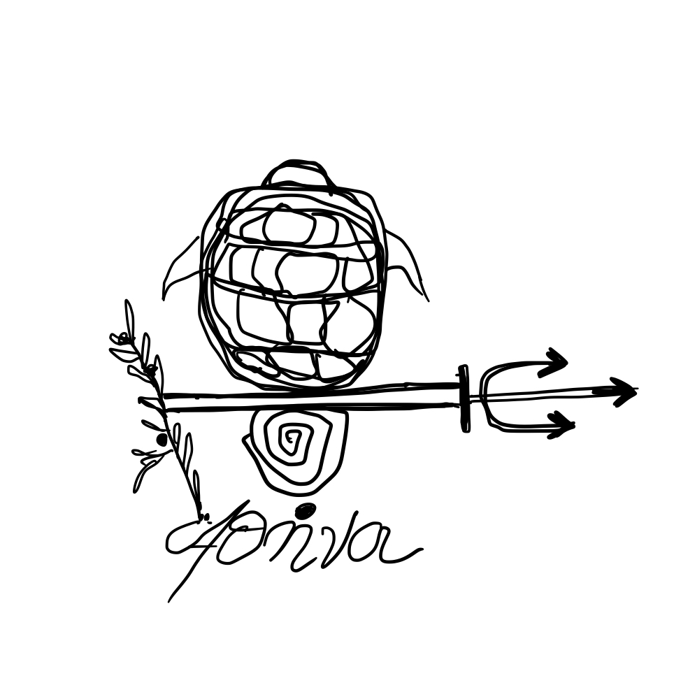

Corinth & The Canal
From Myth to Empire: The Legacy of Corinth.



From Myth to Empire: The Legacy of Corinth.
3-4 hours
Private Guided Tour
Custom pickup point


Exploring the Roots of History Through Artifacts and Antiquity
This full-day tour offers a rich journey through one of ancient Greece’s most influential city-states, combining history, culture, and authentic local flavors.
The tour begins at the Corinth Canal, a narrow artificial waterway that links the Aegean Sea to the Ionian Sea through the Isthmus of Corinth. Although completed in the 19th century, the idea of cutting through this land bridge was first considered in antiquity.
The journey continues to Ancient Corinth, one of the most important city-states of antiquity. Located at a key junction between northern and southern Greece, Corinth was known for its wealth, commerce, and cultural influence. The archaeological site includes the Temple of Apollo, a rare surviving example of Archaic Doric architecture, and the Roman Forum, where administrative and commercial life once took place.
Visitors will also encounter the Bema, the public platform from which the Apostle Paul addressed the citizens of Corinth in the first century CE—an event that established the city’s enduring role in early Christian history. The Archaeological Museum of Corinth houses a collection of artifacts, including mosaics, sculptures, and everyday objects, offering a detailed view of the city’s development from the Greek to the Roman era.
To complete the experience, indulge in an authentic olive oil tasting session. Sample some of Greece’s finest extra virgin olive oils, celebrated worldwide for their rich flavors and health benefits. Learn about the centuries-old tradition of olive cultivation in the region, and discover how olive oil has shaped the local culture and cuisine from ancient times to today.
Begin your journey at this narrow artificial waterway linking the Aegean and Ionian Seas through the Isthmus of Corinth.
Learn about the historical significance of this land bridge, a vital connection between northern and southern Greece.
Explore the archaeological site, including the Temple of Apollo and the Roman Forum, showcasing Corinth's wealth and influence.
Admire this rare example of Archaic Doric architecture, a testament to Corinth's ancient grandeur.
Visit the platform where Apostle Paul addressed the citizens of Corinth, a key site in early Christian history.
Discover artifacts, mosaics, and sculptures that trace Corinth's development from Greek to Roman times.
Conclude your tour with an authentic olive oil tasting session, celebrating Greece's rich culinary heritage.
Entrance fees to venues
Private licensed guide
If you have any questions or would like to book this tour, feel free to reach out:
Email: greecelocalguide@gmail.com
Phone: +30 6942919085